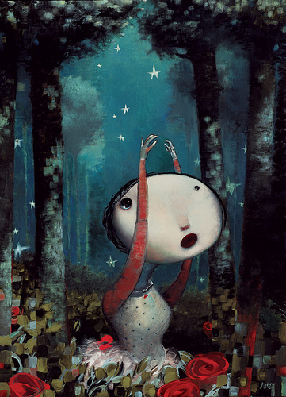

天天编程网
没有青春的青春《姐妹情色》

看过很多讲述姐妹故事的电影，惟独对这部《姐妹情色》印象最深。其实，一直都不喜欢这个中文译名，有些刻意商业的味道，而英文译名《FAT
GIRL》却让人有种自然的喜欢~
片子在一对姐妹的对话中开始，她们在谈论关于爱情的话题，或许应该在这里交待一下这对姐妹的特点：姐姐是个充满青春气息的美少女，同时，或许也是因为她的美，使她的神情中又带了些不屑的意味；而妹妹则是一个平凡的胖女孩，她臃肿的身材以及相貌出众的姐姐的对比，都使她无法自信起来，所以，本应该充满朝气的脸上却带着卑怯与不应出现的苍老。
影片中的叙述，都是从妹妹的角度去讲述的，透过影片的情节，我看到的是一个胖女孩在自己卑微的世界中寻找出口与希望，不知道影片中最后出现的杀人犯，为什么没有在杀了母亲姐姐后再杀死她？或许是因为妹妹在他走向自己时看向他的卑怯的目光；亦或许是因为妹妹在他强暴自己时给了他一个拥抱……不想去做无谓的猜测了。因为我只看到了这个自卑的胖女孩在迷茫地寻找出口时，终于因为一次惨痛的经历而得到了前进的方向？？？？